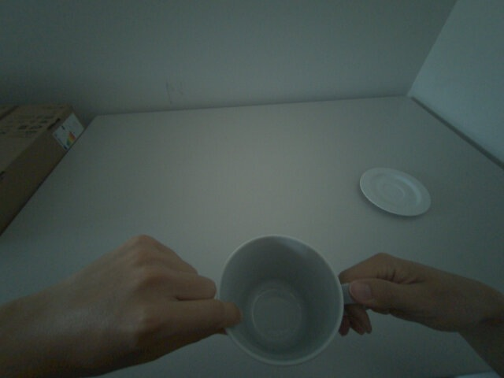

EgoLAM
EgoLAMEgocentric vision · Robot learning
EgoLAM
Learning Latent Actions from Hand and Head Motion
Two RGB frames become two sets of object slots. An inverse dynamics model reads their change to produce a latent action.
From two RGB frames to a latent action
Follow the measured cup-lift example through the encoder, then see where its training targets enter.
Mean success on three LIBERO suites
Over direct behavior cloning
Held-out wrist decoding · mean R²
Experiment · Occlusion
Where does the action code change most?
Watch a person lift a cup. We encode the two frames, cover the same patch in both, and encode them again. The larger the change in the latent action, the more sensitive it is to that patch.
In this example, hiding the region around the left hand changes the code most. Select Play scan to compare all 25 placements, or Peak to jump to the strongest response.

For this cup lift, covering the left-hand region changes the code most.
The same window was masked in both frames. The percentage is its share of the total change in the action code across 25 placements.
Results
From video to robot control.
For each task, every teacher labels the same 40 expert demonstrations. After pretraining, the policy and its action decoder learn from the expert commands for 2,500 updates.
Closed-loop success on LIBERO
Resources